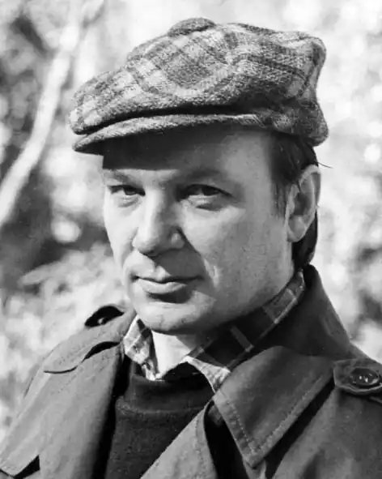

Народився 1 січня 1947 року в c. Третяківка Біловодського району Луганської області. Закінчив Луганський педагогічний інститут імені Тараса Шевченка (1968). Вчителював на Запоріжжі.
Працював заступником начальника прес-служби Міністерства з питань надзвичайних ситуацій та у справах захисту населення від наслідків Чорнобильської катастрофи.
Член Національної спілки письменників України. 1974 р. виїжджав на два роки до Баку вивчати азербайджанську мову. 1994 р. стажувався на курсах турецької мови у Стамбулі. Почав друкуватися з 1967 р. Перекладав з азербайджанської, турецької та кримськотатарської. Автор трьох поетичних збірок: "Рік-осокір" (1984), "Око" (1989), збірки перекладів та статей "Брама Сходу", "Узір зрізу" (2000). Найпослідовніший український поет-конкретист. Свідомо прагнув перенести на український ґрунт рідкісні форми східної поезії (рубаї, туюг, газель, пантун, мухтамілат, мурабба). "Голінний ентузіаст рака літерального" (цикл "В сузір'ї Рака"), один із засновників групи паліндромістів "ГЕРАКЛІТ". Учасник Міжнародної конференції "EyeRhymes" (Едмонтон, Альбертський університет, 1997), співзасновник Світової Асоціації візуального мовлення. Помер 7 липня 2009 р. в Києві після тяжкої хвороби.